Cornell Cinema Club Website Redesign
INFO 2300 Course SyllabusIn the course Info 2300, Intermediate Programming for the Web, the final project requires students to find a client on campus to either design and launch a website for or redesign and improve an existing website. The requirements were to design a multipage website with multiple database and JavaScript functionality requirements.
For this project my team decided to redesign the Cornell Cinema Club's website. As the team's lead designer and front-end developer, I learned project managment skills while improving my technical & design skills.
-
Research & UX Evaluation
Before our first meeting with the client we first began poking around the cinema's current website to take an initial audit to get a feel for the site's usability and functionality. The team prepped for the first client meeting with several questions regarding the what the website currently offers users and what their vision for the site is. We also asked several questions about the types of users and specific questions about Cornell Cinema's operations to help us better understand their goals and how to best serve their users. We interviewed several members of the Cornell Club Cinema admin as well as their student members. We also spoke to students not involved with the club to gauge how we could get students more interested.
We found a few initial problems with the current site, and chose 5 pages to redesign with UX recommendations, with a large focus on the redesign being consistency.
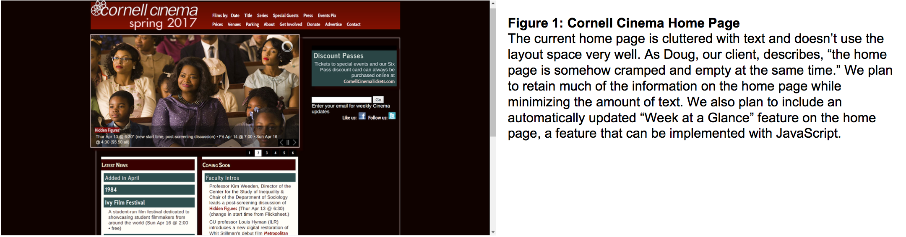 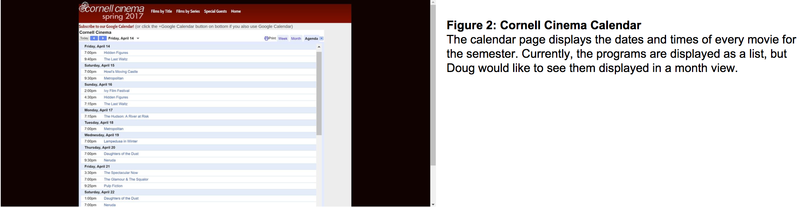 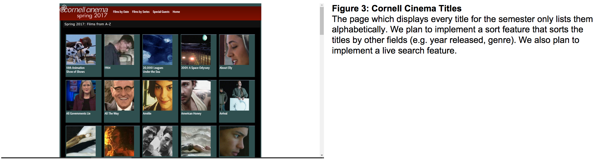 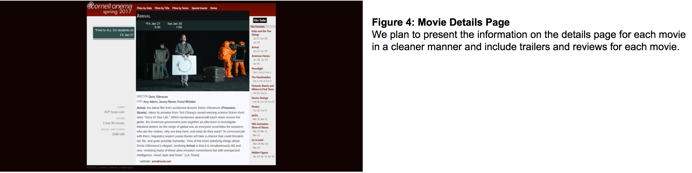 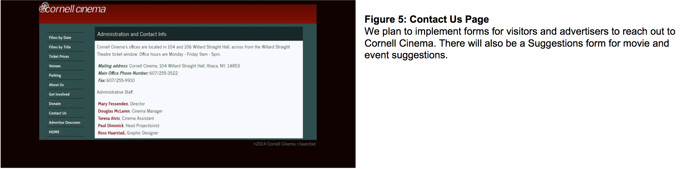 -
Information Architecture
As UX designers, we know the foundation of a successful website is a strong IA, and therefore spent careful consideration when organizing the website's content. Some pages needed to be integrated together, removed, rewritten, or redesigned. We settled on the following site maps.
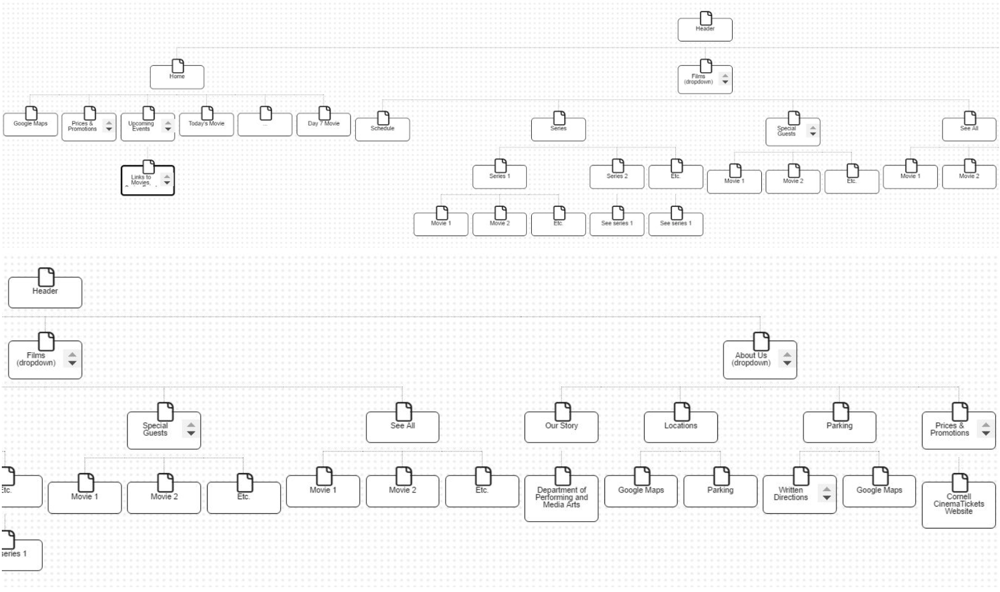 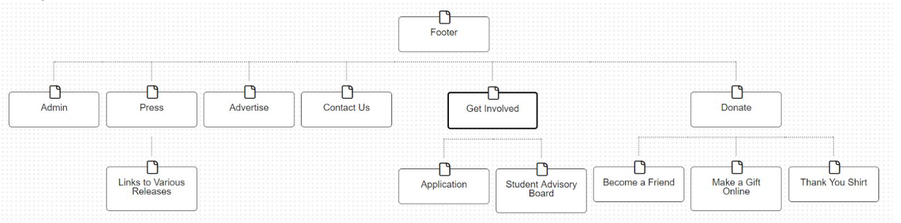 -
Database Design
For the project we were asked to create an ER diagram, described below.
Movies tells information about each specific movie. All of the attributes from the Movie table are characteristics that are unique to the movie. There can only be one movieID, and that is the primary key for the table.
MovieInfo is the information about each movie showing (date, time, etc.). This is related to the movie table by a many to one relation, as there can be many showings of a movie, but only one movie per showing.
Series is the table containing information about a specific series. All of these are unique to the series they talk about. There can only be one series, therefore there can only be one seriesID, and that is the primary key for the table.
The relationship between movies and series is seen by the table isIn. This table simply lists the a movieID corresponding to a seriesID. This lists what movies are in what series. The relationship between movies and series is many to one, as there can be many movies in a series, and a movie can only be in one series (but it does not have to be).
Lastly, the table specialEvents details information about each specific special event. These are independent of the other tables.
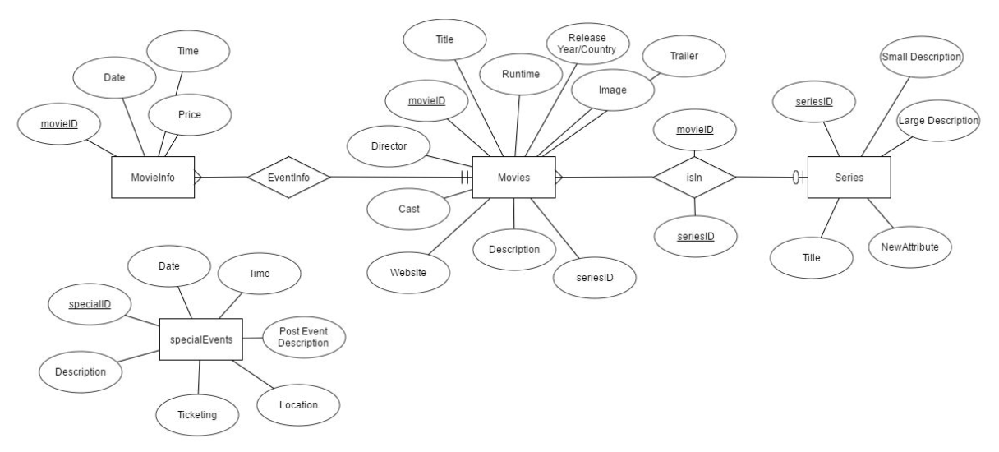 -
Design Iteration
After research & competitive analysis, IA finalization, and the database design, we began sketching a mock up/wireframe of the new site and it's mobile version.
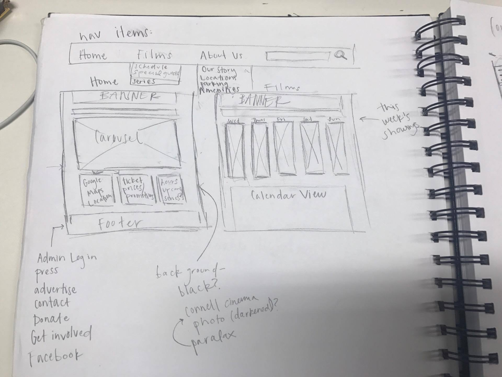 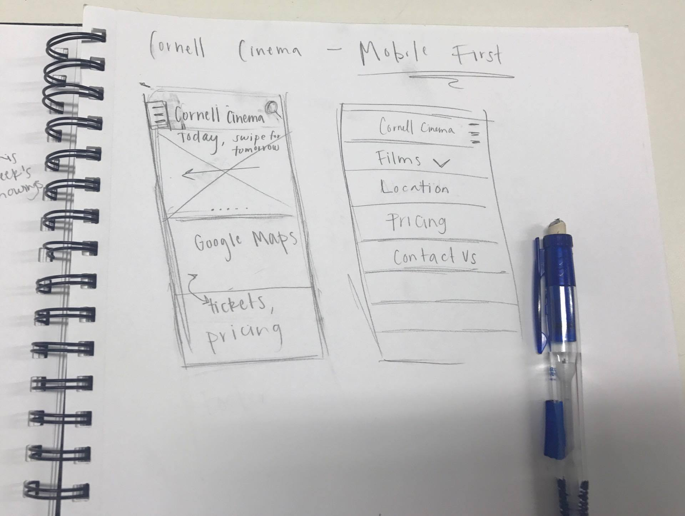 -
PHP Interactivity
A table within mySQL is used to store the primary administrative account and accounts for other staff members, if the primary administrator wishes. Accounts will be granted SELECT, INSERT, and UPDATE privileges. PHP statements (e.g. define(), include_once, $mysqli = new mysqli()) will be used to establish connection with the database. The login function will be written in PHP and will return “true” upon a successful login. Upon a successful login, administrative features will become accessible to the user.
As long as $SESSION[‘logged user’] is set, the user can add, edit, or delete entries within the database. Preg_match statements are used to verify the inputs for added/edited attributes. For example, movie showtimes can only be datetime, runtimes can only be integers representing minutes, and titles may include alphanumeric characters and special characters. Once this inputs are verified, changes will be made to the necessary tables through SQL statements.
The Contact Us form, sends user emails to Cornell Cinema for feedback and advertising purposes, and a Suggestions form for program suggestions requires some of the attributes of the add form (title, director) while leaving other attributes optional (runtime, release year, description). These forms are built similar to the add/edit/delete form.
-
JavaScript Interactivity
Built in JavaScript methods, JQuery event listeners, and Ajax calls are used to implement a live search function. The SQL database are exported to a JSON file. Users can input keywords (e.g. partial title strings, director name) to update the search results. Users can also search for series, which behave similar to the albums in Project 3.
An Ajax call to the JSON file and a series of if-else statements handles the sort function. Movies can be sorted by many attributes (e.g. alphabetically by title, ascending or descending runtime, ascending or descending release year).
The carousel on the homepage is built with JavaScript. Much of the existing code will be untouched, though the CSS will need to be updated to conform with the design of the new website.
-
User Testing
We interviewed five users for user testing, mainly focusing on undergraduate students as the client said this was their main target audience that they were hoping to expand. We gave them four tasks they were asked to complete, and their responses and actions were recorded.
User testing revealed that we need to make changes to the site’s design and navigation structure. Two users stated that the color scheme was dull, the purpose of the search bar was not clear, and the calendar was confusing as a list view. We made updates to the color palette to reflect the users responses, updated the phrasing on the search bar to make its purpose more apparent, and revised the calendar so that it defaults on a month-view. We reorganized content to create more logical user flows.
-
Database Revision
After user testing and some review, the database was altered.
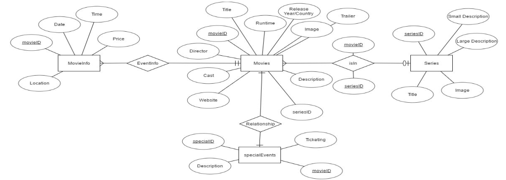 -
Final Design
The final design was a simple grey/white/red layout with a navigation structure that reflected the user's needs. The client was happy with the new functionality and interactivity we brought to their website. Having had more time, there were a few things we would've liked to include, but we gave Cornell Cinema the Github access and we did some work for their site over the summer.
Home
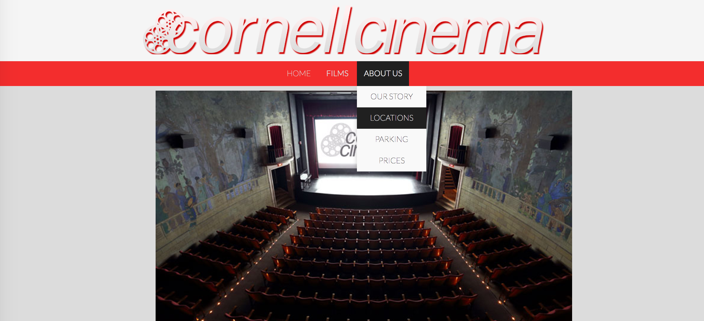Get Involved
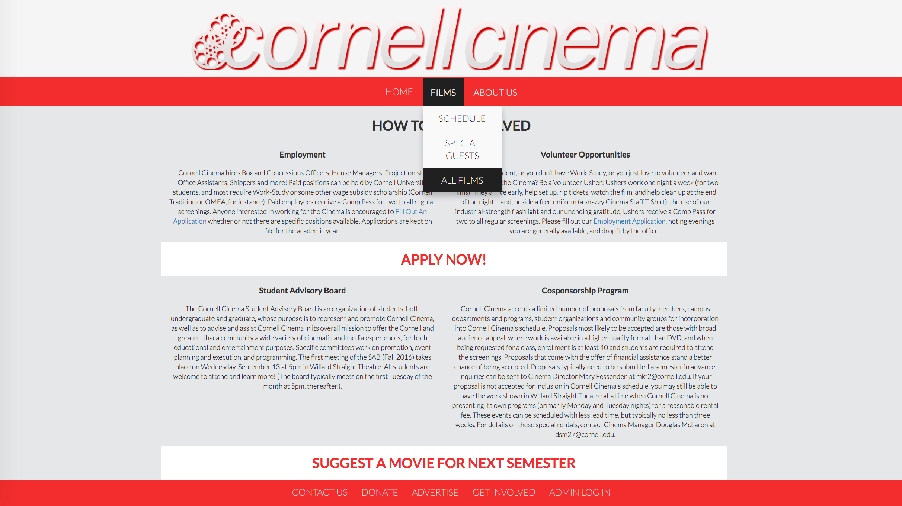Locations
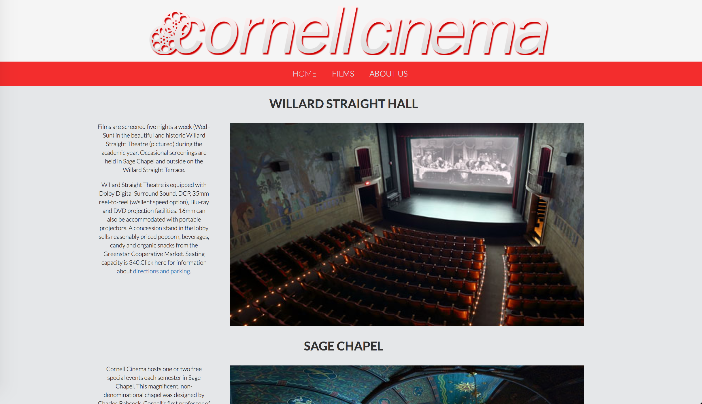